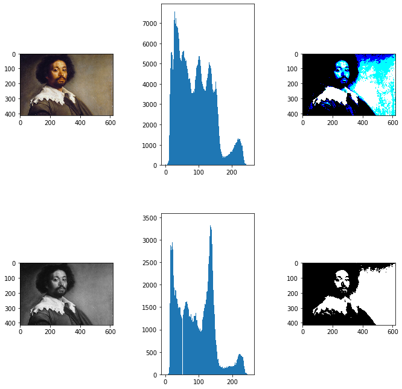
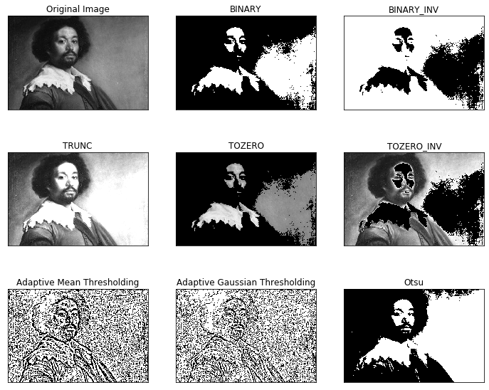
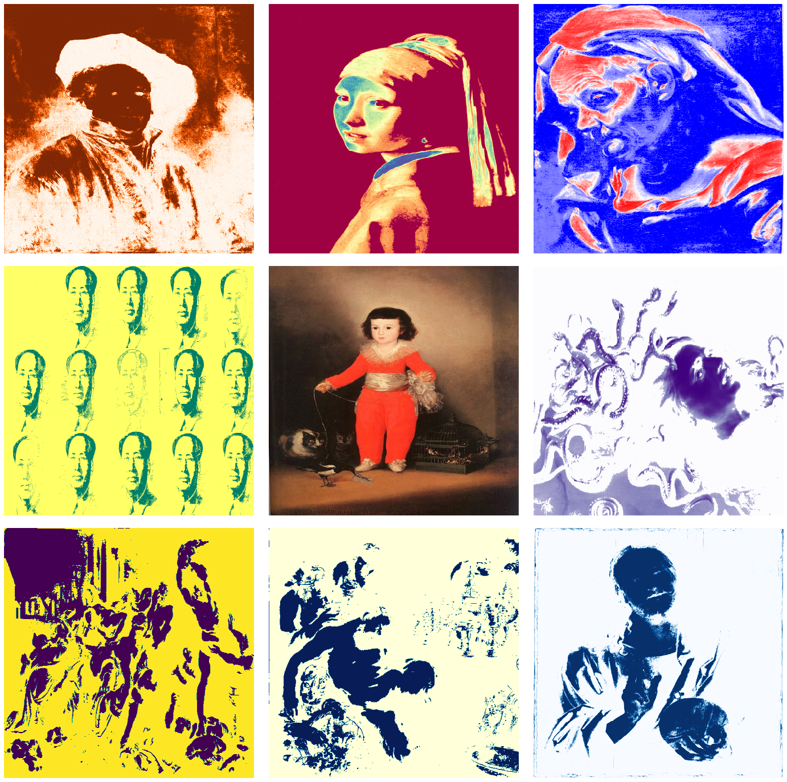
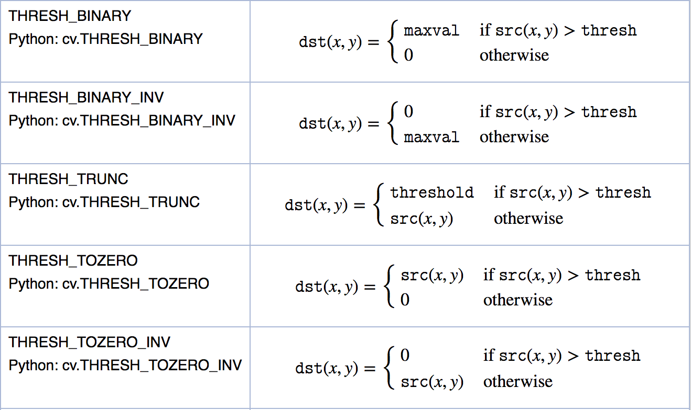

OpenCV thresholding meets historic works of art
Posted on Sun 22 December 2019 in misc
OpenCV or Open source computer vision is a popular image processing library. Originally developed 20 years ago by Intel, it has found widespread adoption in computer vision applications and has over 18 million downloads. Here we explore the effects of OpenCV thresholding on historical artworks.
Thresholding is exactly what it sounds like, each pixel is compared to a threshold value, if it is less than the threshold, that pixel is set to 0, else it is set to a maximum value. Thresholding is typically applied to greyscale images but here we observe its effects on the original image as well.
The code below explores simple thresholding on "Juan de Pareja" by Velázquez.
import cv2 as cv
import matplotlib.pyplot as plt
import numpy as np
import pandas as pd
image = cv.imread('images/opencv2/juan.jpg')
fig, ax=plt.subplots(2,3)
fig.tight_layout()
fig.set_figwidth(10)
fig.set_figheight(10)
ax[0][0].imshow(cv.cvtColor(image, cv.COLOR_BGR2RGB))
ax[0][1].hist(image.ravel(),256);
th1=cv.threshold(image,100,255,cv.THRESH_BINARY)[1]
ax[0][2].imshow(th1, cmap = 'gray')
#Converting image to greyscale
image = cv.cvtColor(image, cv.COLOR_BGR2GRAY)
ax[1][0].imshow(cv.cvtColor(image, cv.COLOR_BGR2RGB))
ax[1][1].hist(image.ravel(),256);
th1=cv.threshold(image,100,255,cv.THRESH_BINARY)[1]
ax[1][2].imshow(th1, cmap = 'gray');

The Open CV library supports several kinds of thresholding, here we display their effects on our image.
fig = plt.figure()
fig.set_figwidth(12)
fig.set_figheight(10)
img = cv.imread('images/opencv2/juan.jpg',0)
ret,thresh1 = cv.threshold(img,127,255,cv.THRESH_BINARY)
ret,thresh2 = cv.threshold(img,127,255,cv.THRESH_BINARY_INV)
ret,thresh3 = cv.threshold(img,127,255,cv.THRESH_TRUNC)
ret,thresh4 = cv.threshold(img,127,255,cv.THRESH_TOZERO)
ret,thresh5 = cv.threshold(img,127,255,cv.THRESH_TOZERO_INV)
th2 = cv.adaptiveThreshold(img,255,cv.ADAPTIVE_THRESH_MEAN_C,cv.THRESH_BINARY,11,2)
th3 = cv.adaptiveThreshold(img,255,cv.ADAPTIVE_THRESH_GAUSSIAN_C,cv.THRESH_BINARY,11,2)
th4 = cv.threshold(img,0,255,cv.THRESH_BINARY+cv.THRESH_OTSU)[1]
titles = ['Original Image','BINARY','BINARY_INV','TRUNC','TOZERO','TOZERO_INV','Adaptive Mean Thresholding', 'Adaptive Gaussian Thresholding','Otsu']
images = [img,thresh1, thresh2, thresh3, thresh4, thresh5,th2,th3, th4]
for i in range(9):
plt.subplot(3,3,i+1),plt.imshow(images[i],'gray')
plt.title(titles[i])
plt.xticks([]),plt.yticks([])

Adaptive Thresholding acknowleges that there may not be a suitable global value, and instead uses points close to the pixel in question to determine the theshold value. As a result, different areas of the image have different threshold values. This can lead to better results in certain cases, such as when the image has varied lighting.
Otsu Thresholding seeks to find an optimal thresholding value. It does so by identifying the values around in which pixels tend to conentrate (these would appear as peaks in the historgram). It finds the point that minimizes the variance between these "peaks" to give us the optimal thresholding value.
Detaiils for all supported thresholding functions can be found at the bottom of this post.
### Setting processing values for each image
import cv2
cmaps=['Oranges','Spectral', 'bwr','summer_r','winter','Blues','viridis_r','YlGnBu','Purples']
names=[
'images/opencv2/rem.jpg'
,'images/opencv2/vermeer.jpg'
,'images/opencv2/oldwoman.jpeg'
,'images/opencv2/mao.jpg'
,'images/opencv2/goya.jpg'
,'images/opencv2/medusa.jpeg'
,'images/opencv2/massacre.jpeg'
,'images/opencv2/satyr_drunk.jpg'
,'images/opencv2/salvator-mundi.jpg'
]
filters=[
cv2.THRESH_BINARY
,cv2.THRESH_TOZERO
,cv2.THRESH_TOZERO
,cv2.THRESH_BINARY_INV
,cv2.THRESH_TRUNC
,cv2.THRESH_TOZERO
,cv2.THRESH_BINARY+cv2.THRESH_OTSU
,cv2.THRESH_BINARY+cv2.THRESH_OTSU
,cv2.THRESH_BINARY+cv2.THRESH_OTSU
]
threshold_values=[
25
,50
,50
,20
,200
,100
,100
,200
,60
]
data=pd.DataFrame(zip(cmaps,names,filters,threshold_values), columns=['cmaps', 'images','threshold_codes','threshold'])
data
| cmaps | images | threshold_codes | threshold | |
|---|---|---|---|---|
| 0 | Oranges | images/opencv2/rem.jpg | 0 | 25 |
| 1 | Spectral | images/opencv2/vermeer.jpg | 3 | 50 |
| 2 | bwr | images/opencv2/oldwoman.jpeg | 3 | 50 |
| 3 | summer_r | images/opencv2/mao.jpg | 1 | 20 |
| 4 | winter | images/opencv2/goya.jpg | 2 | 200 |
| 5 | Blues | images/opencv2/medusa.jpeg | 3 | 100 |
| 6 | viridis_r | images/opencv2/massacre.jpeg | 8 | 100 |
| 7 | YlGnBu | images/opencv2/satyr_drunk.jpg | 8 | 200 |
| 8 | Purples | images/opencv2/salvator-mundi.jpg | 8 | 60 |
width = 450
height = 450
dim = (width, height)
fig = plt.figure()
plt.subplots_adjust(wspace=0,hspace=0.05)
fig.tight_layout()
fig.set_figwidth(25)
fig.set_figheight(25)
for idx,name in enumerate(names):
fig.add_subplot(3, 3, idx+1)
plt.axis('off')
if idx==4:
image = cv2.imread(str(name))
image = cv2.resize(image, dim, interpolation = cv2.INTER_AREA)
plt.imshow(cv.cvtColor(image, cv.COLOR_BGR2RGB))
continue
image = cv2.imread(str(name), cv2.IMREAD_GRAYSCALE)
image = cv2.threshold(image,data['threshold'][idx],255,data['threshold_codes'][idx])
image=image[1]
image = cv2.resize(image, dim, interpolation = cv2.INTER_AREA)
plt.imshow(image, cmap=data['cmaps'][idx])

The humanity & ambitions of an unsettled child Inspired by Goya's potrait of Manuel Osorio (center, left unchanged).
The original works, all of which I have been fortunate enough to personally see (by index position):
- (0,0): "Self-Portrait" - Rembrandt, 1660.
- (0,1): "Girl with a Pearl Earring" - Johannes Vermeer, 1665.
- (0,2): "Head of an Old Woman" - Orazio Borgianni, circa 1610.
- (1,0): "Mao" - Andy Warhol, 1972.
- (1,1): "Manuel Osorio Manrique de Zuñiga" - Goya, 1787-88.
- (1,2): "Medusa", Peter Paul Ruebens, circa 1618.
- (2,0): "The Massacre of the Innocents" - Peter Paul Ruebens, 1611-12.
- (2,1): "The Drunken Satyr" - Peter Paul Ruebens, circa 1620s.
- (2,2): “Salvator Mundi” - Albrecht Durer, circa 1505.
